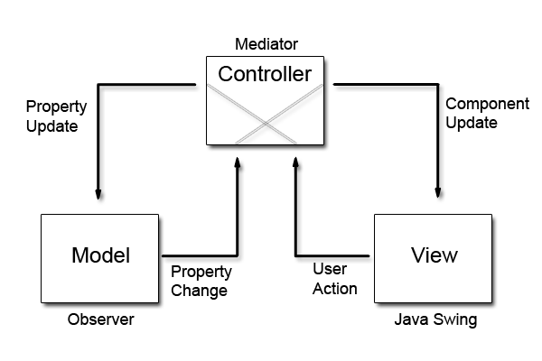
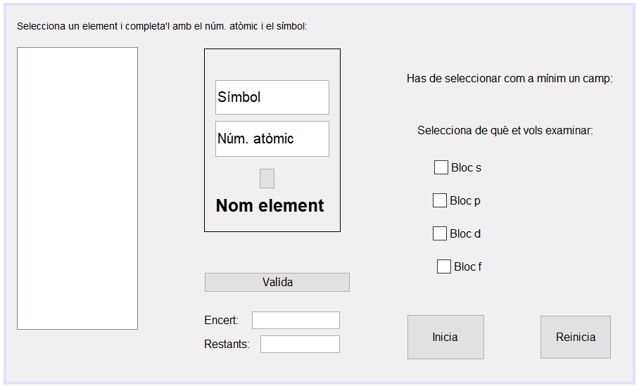
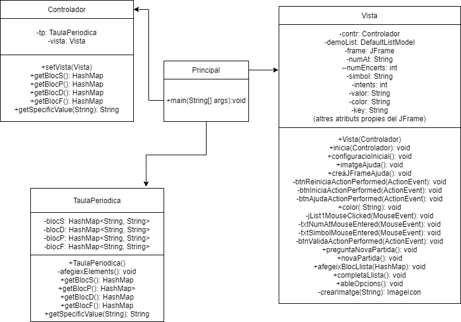

En aquesta pàgina trobaràs tota la informació necessària per comprendre el programa de la taula periòdica
En aquest programa, pots escollir de quins bloc et vols examinar i segons la teva elecció, t'anirà preguntant sobre els elements desitjats. També t'informa de les teves estadístiques (encerts i elements restants)
Fet en
Java
Per aquest projecte he utilitzat un patró d'arquitectura de software que es diu MVC, consisteix en separar la part lògica de la gràfica

Principal
Aquest objecte conté el mètode main (mètode que inicia el programa). Aquí es creen els altres objectes (26 línies):
Vista
Aquest objecte és l'encarregat de crear el JFrame (vista) de l'aplicació. Té una part gràfica (design) i una altre de codi(source):
Design -> a sota està la configuració inicial de la finestra, hi ha més codi per darrere però nó és visible:
Source (702 línies) -> aquí es posa funcionalitat i es configura l'estètica del disseny:
Taula periòdica (191 línies):
Aquesta classe conté l'informació de la taula periòdica i dels elements (símbol, nom i número atòmic). Per altre banda, té uns mètodes que permeten accedir a aquesta informació
Controlador (47 línies):
La única funció del controlador és connectar el model (TaulaPeriodica.java) i la vista (Vista.java)
Esquema visual del projecte on es detallen atributs i mètodes
